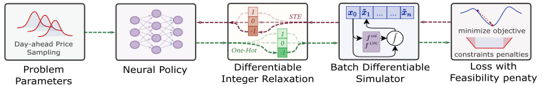
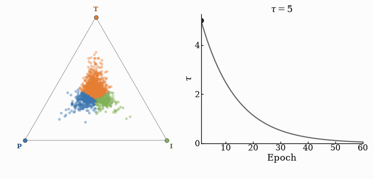
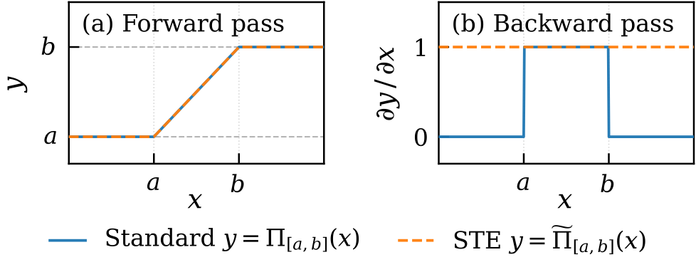
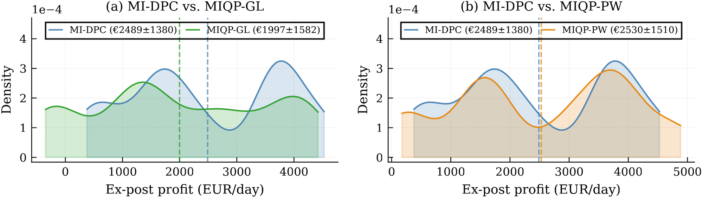
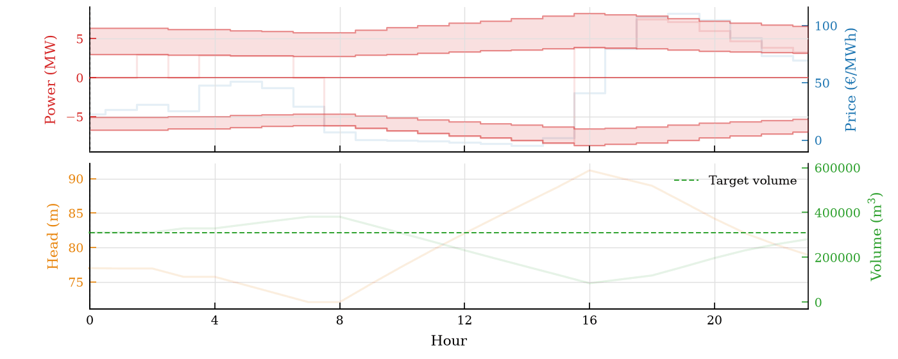
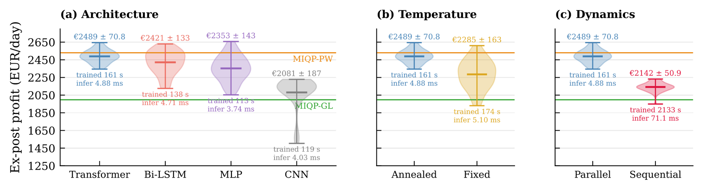
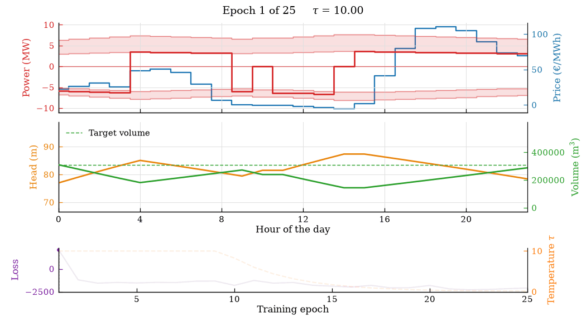

IEEE Conference on Decision and Control (CDC), 2026
Mixed-Integer Nonlinear Differentiable Predictive Control for Underground Pumped Hydro Energy Storage Systems
1Department of Civil and Systems Engineering, Johns Hopkins University
2Slovak University of Technology in Bratislava
Scheduling an underground pumped hydro plant for the day-ahead market is a mixed-integer nonlinear program: every hour the unit picks pump, idle, or turbine and a power setpoint, under polynomial performance curves and a nonconvex volume-head coupling. MI-DPC trains a Transformer policy to output the whole 24-hour schedule in one forward pass. Training is self-supervised: the gradient of the ex-post profit flows through a differentiable plant simulator and a Gumbel-Softmax straight-through estimator, so no pre-solved schedules are needed.


1.6%
gap to piecewise MIQP
Mean ex-post profit of 2,489 ± 71 EUR/day over 47 training seeds, against 2,530 EUR/day for the piecewise MIQP baseline.
4.9 ms
per 24-hour schedule
Five orders of magnitude faster than piecewise MIQP (919 s) and 390× faster than global-linear MIQP (1.91 s).
+24.6%
profit over global-linear MIQP
2,489 versus 1,997 EUR/day, scored under the exact nonlinear simulator on 19 held-out days.
161 s
of one-time training
Self-supervised on sampled price scenarios, with no pre-solved optimal schedules as labels.
The scheduling problem
An underground pumped hydro plant uses an abandoned mine as its lower reservoir. As a price taker in the day-ahead market it pumps when electricity is cheap and generates when it is expensive. Over a horizon of \(N = 24\) hours, the schedule solves
with \(\lambda_t^{\mathrm{DA}}\) the day-ahead price, \(p_t^{T} \ge 0\) and \(p_t^{P} \le 0\) the turbine and pump power, \(q_t\) the flow, \(h_t\) the hydraulic head, and \(v_t\) the lower-reservoir volume. Integer modes, bivariate polynomial performance curves, and a nonconvex volume-head map make this a mixed-integer nonlinear program (MINLP).
Existing solvers trade fidelity for tractability. A global linearization (MIQP-GL) solves in seconds but misjudges the physics; a piecewise approximation (MIQP-PW) is accurate but takes about a quarter of an hour per schedule. Either way the approximate schedule is then executed on the real plant, where deviations are settled at imbalance prices and water left above the end-of-day target has a cost. All results on this page are therefore ex-post profits, evaluated under the exact nonlinear simulator with both of these costs included.
MI-DPC
MI-DPC treats scheduling as a parametric problem. A neural policy \(\pi_\theta\) reads the parameters \(\xi = [h^{\mathrm{init}}, v^{\mathrm{init}}, \lambda_1^{\mathrm{DA}}, \dots, \lambda_N^{\mathrm{DA}}]\) and outputs, for all 24 hours at once, continuous power ratios and mode logits. A Gumbel-Softmax layer turns the logits into hard modes, a differentiable simulator rolls out the nonlinear plant, and the loss is the negative ex-post profit plus soft feasibility penalties. Because every block is differentiable, the policy is trained directly on the control objective over sampled price scenarios, with no optimal schedules as labels.

Four ingredients make the mixed-integer nonlinear setting trainable:
- Transformer policy. Each hour is a token holding the normalized price and the initial head and volume. A Transformer encoder attends over the full horizon, which is what arbitrage needs: whether to pump at 3 a.m. depends on the evening peak. Two heads output the power ratios and the mode logits, and the mode-logit biases are initialized to the mode frequencies of optimal schedules so that training starts from sensible mode mixes.
- Gumbel-Softmax with two-stage annealing. The forward pass takes a hard one-hot mode; the backward pass differentiates a softmax relaxation at temperature \(\tau\). High \(\tau\) explores modes but biases the relaxation, low \(\tau\) commits but gives weak, noisy gradients. MI-DPC holds \(\tau = \tau_0\) through a warm-up and then decays it exponentially to \(\tau_{\mathrm{end}}\).
- Parallel differentiable simulator. Rolling the plant out hour by hour makes backpropagation a 24-step chain, with the vanishing gradients familiar from recurrent networks. The parallel rollout evaluates all hours at once from the initial head, recovers the head trajectory, and re-evaluates once with it. This two-pass fixed-point estimate gives up a little simulator fidelity during training for a much stronger gradient signal.
- Straight-through clamp and soft penalties. States are clamped to their physical bounds in the forward pass, so profit is never computed on an infeasible trajectory, while the backward pass uses a unit gradient so that a saturated state still produces a training signal. Penalties on the unclamped head and volume push the policy back inside the bounds.
The temperature follows
with \(E\) the number of epochs and \(e_w\) the warm-up length. In the paper \(\tau_0 = 10\), \(\tau_{\mathrm{end}} = 0.08\), and the warm-up covers 9 of 25 epochs.


The training loss is
where \(p^{\mathrm{opt}}\) is the scheduled power, \(p^{\mathrm{sim}}\) the power realized in the simulator, and \(\mathcal{L}^{\mathrm{feas}}\) the penalty on head and volume bound violations. At inference the Gumbel noise is dropped and each hour takes the mode with the largest logit.
Results
The case study is a representative Belgian plant with a head range of 50 to 99 m and a 588,000 m³ reservoir, with performance curves measured on a reduced-scale Francis pump-turbine. Prices are 2024 Belgian day-ahead prices from the transmission system operator Elia. The policy trains for 25 epochs on 10,000 sampled price scenarios and is evaluated on 19 held-out days chosen by K-medoids clustering. MI-DPC numbers are the mean and standard deviation over 47 training seeds.
Benchmark
All three methods are scored by the same ex-post profit. The MIQP baselines optimize under approximate dynamics, so their schedules deviate once executed and pay imbalance and target-volume penalties; MI-DPC trains on the ex-post profit directly. It earns 24.6% more than the global-linear MIQP and comes within 1.6% of the piecewise MIQP, and it is the only one of the three fast enough to re-dispatch in real time as market conditions change.
| Method | Ex-post profit (EUR/day) | Training time | Inference time |
|---|---|---|---|
| MIQP-GL | 1,997 | n/a | 1.91 s |
| MIQP-PW | 2,530 | n/a | 918.89 s |
| MI-DPC | 2,489 ± 71 | 161 s | 4.9 ms |

A converged schedule
For a representative day, the trained policy pumps through the low-price hours and turbines at the price peaks. The dispatch stays inside the head-dependent feasible power bands at every hour, and head and volume remain within bounds and end the day near the target.

Ablation
Three design choices are ablated, each over 47 seeds on the same 19 days.

- Architecture. The Transformer reaches 2,489 ± 71 EUR/day, ahead of the Bi-LSTM (2,421 ± 133), the MLP (2,353 ± 143), and the CNN (2,081 ± 187).
- Temperature schedule. Two-stage annealing beats a fixed temperature of 0.08 (2,285 ± 163 EUR/day) and more than halves the spread across seeds, from 163 to 71 EUR/day: the warm-up regularizes the combinatorial search.
- Training simulator. The parallel rollout beats the sequential rollout (2,142 ± 51 EUR/day) and trains 12× faster, 161 s against 2,133 s.
Training dynamics
The animation replays one training run on the same representative day: at each epoch it shows the schedule the policy would produce at that point in training. The broad arbitrage pattern, pumping through the cheap midday hours and generating in the evening peak, is found within the first four epochs, while the temperature is still high. What keeps changing afterwards is the low-margin early morning, where the mode flips between pump and turbine from one epoch to the next. Those hours settle only as the temperature decays, and idle hours appear only late in training, once the decisions are nearly hard.
Training with the sequential rollout instead reaches a lower profit (see the ablation above). The gradient that reaches the policy is weaker there: averaged over training and over 47 seeds, its norm is 3.4 times smaller than with the parallel simulator.
This animation is supplementary; it is not in the conference paper.

Citation
@inproceedings{zheng2026midpc,
title={Mixed-Integer Nonlinear Differentiable Predictive Control for Underground Pumped Hydro Energy Storage Systems},
author={Zheng, Honghui and Boldock{\'y}, J{\'a}n and Dvorkin, Yury and Drgo{\v{n}}a, J{\'a}n},
booktitle={2026 IEEE 65th Conference on Decision and Control (CDC)},
year={2026},
eprint={2609.17964},
archivePrefix={arXiv}
}Paper: arXiv:2609.17964 · Code: github.com/SOLARIS-JHU/MI-DPC-UPHES